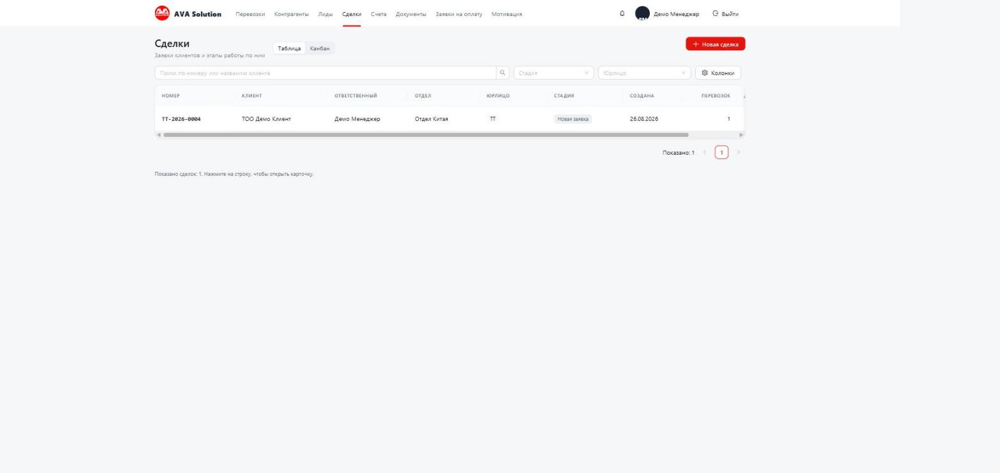
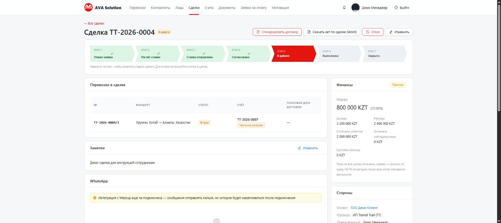

Вы ведёте сделки от заявки клиента до закрытия: считаете ставку, согласуете условия, следите за перевозками внутри сделки и выставляете счета.
Email и пароль выдаёт администратор. Поставьте галочку «Запомнить меня» только на своём рабочем компьютере.
Раздел «Сделки» → кнопка Новая сделка. Укажите клиента и юрлицо, от которого работаете —
номер сделки присвоится автоматически (например, TT-2026-0004).

Внутри карточки сделки нажимайте на этапы шкалы: Новая заявка → Расчёт ставки → Ставка отправлена →
Согласована → В работе → Выполнена → Закрыта. Если клиент отказался — кнопка Отказ
с указанием причины (строго из списка: дорого / сроки / конкурент / не вышел на связь / другое).

Кнопка Новая перевозка открывает мастер из 4 шагов (сделка, груз, маршрут и перевозчик, проверка).
Счёт клиенту выставляется не отдельно, а прямо в карточке перевозки — там же видно, оплачен ли он.
Кнопки Сгенерировать договор и Скачать акт по сделке в верхней части карточки сделки
собирают документ по бланку компании со всеми реквизитами автоматически.
Колокольчик в правом верхнем углу — просроченные перевозки, неоплаченные счета и истекающие договоры контрагентов (за 30 дней до окончания приходит именно ответственному менеджеру).